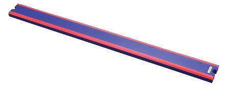
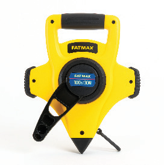
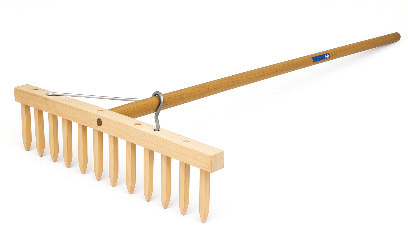

Take-off board
The take-off board is a white rectangular board measuring 1.22 m in length, 0.20 m in width, and at most 0.10 m in depth. It must be level with the surface of the runway to ensure a smooth transition for athletes.
Landing area
The landing area is about 7 m to 9 m long, depending on the distance from the take-off board. It is 2.75 m wide, with an optimal setup being 8 m in length and positioned 1m from the take-off board. The runway centre must align with the centre of the landing area.
Long jump equipment
There are various equipment required for long jump performance, as shown in Table 2.2.
Table 2.2: Long jump equipment
Equipment |
Function |
|
|---|---|---|
| Plasticine indicator board |
 |
Used to indicate foul jumps in major competitions. |
| Tape measures |
 |
Measure the distance jumped. |
| Rake |
 |
Level the sand in the landing area after each attempt. |
SPORTS STUDIES FORM TWO.indd 48
9/17/25 9:54 AM